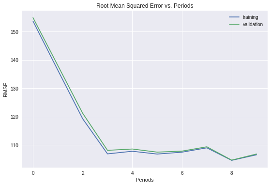
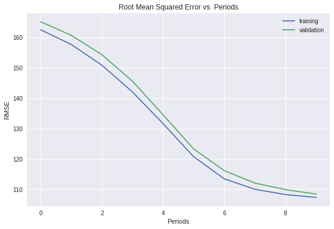
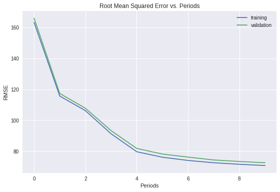
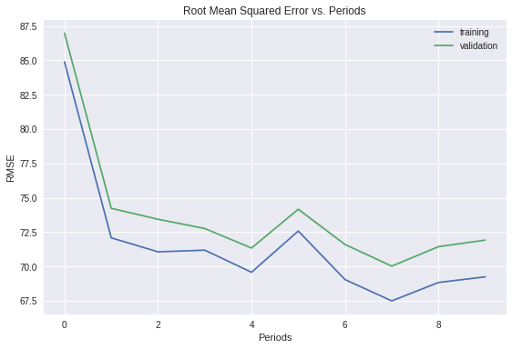
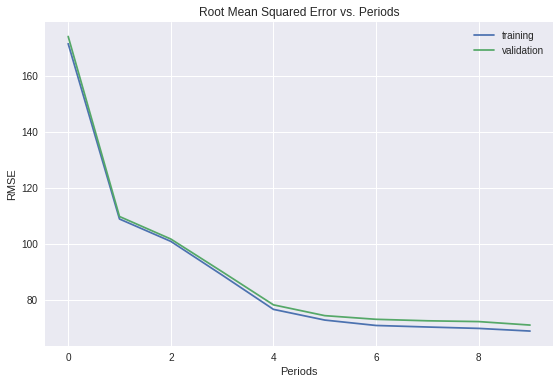
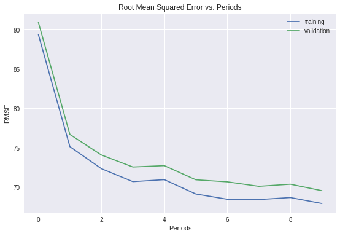
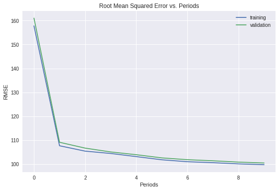

神经网络简介
- 使用 TensorFlow
DNNRegressor类定义神经网络 (NN) 及其隐藏层 - 训练神经网络学习数据集中的非线性规律，并实现比线性回归模型更好的效果
在之前的练习中，我们使用合成特征来帮助模型学习非线性规律。
一组重要的非线性关系是纬度和经度的关系，但也可能存在其他非线性关系。
现在我们从之前练习中的逻辑回归任务回到标准的（线性）回归任务。也就是说，我们将直接预测 median_house_value。
设置
加载数据并创建特征定义。
1 | from __future__ import print_function |
1 | def preprocess_features(california_housing_dataframe): |
1 | # Choose the first 12000 (out of 17000) examples for training. |
Training examples summary:
| latitude | longitude | housing_median_age | total_rooms | total_bedrooms | population | households | median_income | rooms_per_person | |
|---|---|---|---|---|---|---|---|---|---|
| count | 12000.0 | 12000.0 | 12000.0 | 12000.0 | 12000.0 | 12000.0 | 12000.0 | 12000.0 | 12000.0 |
| mean | 35.6 | -119.6 | 28.7 | 2636.9 | 537.9 | 1429.2 | 500.3 | 3.9 | 2.0 |
| std | 2.1 | 2.0 | 12.5 | 2187.4 | 422.5 | 1168.5 | 387.3 | 1.9 | 1.1 |
| min | 32.5 | -124.3 | 1.0 | 2.0 | 1.0 | 3.0 | 1.0 | 0.5 | 0.0 |
| 25% | 33.9 | -121.8 | 18.0 | 1461.0 | 296.8 | 788.0 | 281.0 | 2.6 | 1.5 |
| 50% | 34.2 | -118.5 | 29.0 | 2116.0 | 431.0 | 1165.0 | 407.5 | 3.5 | 1.9 |
| 75% | 37.7 | -118.0 | 37.0 | 3127.0 | 645.0 | 1713.0 | 601.0 | 4.8 | 2.3 |
| max | 42.0 | -114.3 | 52.0 | 37937.0 | 6445.0 | 35682.0 | 6082.0 | 15.0 | 55.2 |
Validation examples summary:
| latitude | longitude | housing_median_age | total_rooms | total_bedrooms | population | households | median_income | rooms_per_person | |
|---|---|---|---|---|---|---|---|---|---|
| count | 5000.0 | 5000.0 | 5000.0 | 5000.0 | 5000.0 | 5000.0 | 5000.0 | 5000.0 | 5000.0 |
| mean | 35.6 | -119.6 | 28.4 | 2659.9 | 542.9 | 1430.4 | 503.5 | 3.9 | 2.0 |
| std | 2.1 | 2.0 | 12.9 | 2162.0 | 419.1 | 1096.8 | 377.9 | 1.9 | 1.3 |
| min | 32.6 | -124.3 | 2.0 | 15.0 | 4.0 | 8.0 | 2.0 | 0.5 | 0.1 |
| 25% | 33.9 | -121.8 | 18.0 | 1465.8 | 297.0 | 793.0 | 283.0 | 2.6 | 1.5 |
| 50% | 34.2 | -118.5 | 28.0 | 2154.5 | 439.0 | 1173.0 | 413.0 | 3.5 | 1.9 |
| 75% | 37.7 | -118.0 | 37.0 | 3216.0 | 658.2 | 1738.0 | 614.0 | 4.7 | 2.3 |
| max | 41.9 | -114.6 | 52.0 | 30401.0 | 4957.0 | 13251.0 | 4339.0 | 15.0 | 52.0 |
Training targets summary:
| median_house_value | |
|---|---|
| count | 12000.0 |
| mean | 206.6 |
| std | 115.5 |
| min | 15.0 |
| 25% | 119.2 |
| 50% | 180.8 |
| 75% | 263.3 |
| max | 500.0 |
Validation targets summary:
| median_house_value | |
|---|---|
| count | 5000.0 |
| mean | 208.9 |
| std | 117.0 |
| min | 15.0 |
| 25% | 120.2 |
| 50% | 179.2 |
| 75% | 268.3 |
| max | 500.0 |
构建神经网络
神经网络由 DNNRegressor 类定义。
使用 hidden_units 定义神经网络的结构。hidden_units 参数会创建一个整数列表，其中每个整数对应一个隐藏层，表示其中的节点数。以下面的赋值为例：
hidden_units=[3,10]
上述赋值为神经网络指定了两个隐藏层：
- 第一个隐藏层包含 3 个节点。
- 第二个隐藏层包含 10 个节点。
如果我们想要添加更多层，可以向该列表添加更多整数。例如，hidden_units=[10,20,30,40] 会创建 4 个分别包含 10、20、30 和 40 个单元的隐藏层。
默认情况下，所有隐藏层都会使用 ReLu 激活函数，且是全连接层。
1 | def construct_feature_columns(input_features): |
1 | def train_nn_regression_model( |
训练神经网络模型
调整超参数，目标是将 RMSE 降到 110 以下。
我们已经知道，在使用了很多特征的线性回归练习中，110 左右的 RMSE 已经是相当不错的结果。现在我们将得到比它更好的结果。
对于神经网络而言，过拟合是一种真正的潜在危险。您可以查看训练数据损失与验证数据损失之间的差值，以帮助判断模型是否有过拟合的趋势。如果差值开始变大，则通常可以肯定存在过拟合。
下面参数是我写的，也许有更好的参数会获得更低的RMSE。
1 | dnn_regressor = train_nn_regression_model( |
Training model...
RMSE (on training data):
period 00 : 153.67
period 01 : 136.38
period 02 : 119.26
period 03 : 106.87
period 04 : 107.80
period 05 : 106.81
period 06 : 107.47
period 07 : 109.00
period 08 : 104.58
period 09 : 106.55
Model training finished.
Final RMSE (on training data): 106.55
Final RMSE (on validation data): 106.82

用测试数据进行评估
确认验证效果结果经受得住测试数据的检验。
获得满意的模型后，用测试数据评估该模型，以与验证效果进行比较。
测试数据集位于此处。
1 | california_housing_test_data = pd.read_csv("https://download.mlcc.google.cn/mledu-datasets/california_housing_test.csv", sep=",") |
Final RMSE (on test data): 105.23
提高神经网络性能
通过将特征标准化并应用各种优化算法来提高神经网络的性能
注意：本练习中介绍的优化方法并非专门针对神经网络；这些方法可有效改进大多数类型的模型。
1 | def train_nn_regression_model_optimize( |
1 | _ = train_nn_regression_model_optimize( |
Training model...
RMSE (on training data):
period 00 : 162.48
period 01 : 157.66
period 02 : 150.85
period 03 : 142.03
period 04 : 131.60
period 05 : 120.72
period 06 : 113.46
period 07 : 110.01
period 08 : 108.28
period 09 : 107.34
Model training finished.
Final RMSE (on training data): 107.34
Final RMSE (on validation data): 108.43

线性缩放
将输入标准化以使其位于 (-1, 1) 范围内可能是一种良好的标准做法。这样一来，SGD 在一个维度中采用很大步长（或者在另一维度中采用很小步长）时不会受阻。数值优化的爱好者可能会注意到，这种做法与使用预调节器 (Preconditioner) 的想法是有联系的。
1 | def linear_scale(series): |
使用线性缩放将特征标准化
将输入标准化到 (-1, 1) 这一范围内。能达到什么程度的效果？
一般来说，当输入特征大致位于相同范围时，神经网络的训练效果最好。
对您的标准化数据进行健全性检查。（如果您忘了将某个特征标准化，会发生什么情况？）
由于标准化会使用最小值和最大值，我们必须确保在整个数据集中一次性完成该操作。
我们之所以可以这样做，是因为我们所有的数据都在一个 DataFrame 中。如果我们有多个数据集，则最好从训练集中导出标准化参数，然后以相同方式将其应用于测试集。
1 | def normalize_linear_scale(examples_dataframe): |
Training model...
RMSE (on training data):
period 00 : 163.23
period 01 : 115.65
period 02 : 106.20
period 03 : 91.27
period 04 : 79.65
period 05 : 76.10
period 06 : 74.00
period 07 : 72.52
period 08 : 71.52
period 09 : 70.72
Model training finished.
Final RMSE (on training data): 70.72
Final RMSE (on validation data): 72.52

尝试其他优化器
使用 AdaGrad 和 Adam 优化器并对比其效果。
AdaGrad 优化器是一种备选方案。AdaGrad 的核心是灵活地修改模型中每个系数的学习率，从而单调降低有效的学习率。该优化器对于凸优化问题非常有效，但不一定适合非凸优化问题的神经网络训练。您可以通过指定 AdagradOptimizer（而不是 GradientDescentOptimizer）来使用 AdaGrad。请注意，对于 AdaGrad，您可能需要使用较大的学习率。
对于非凸优化问题，Adam 有时比 AdaGrad 更有效。要使用 Adam，请调用 tf.train.AdamOptimizer 方法。此方法将几个可选超参数作为参数，但我们的解决方案仅指定其中一个 (learning_rate)。在应用设置中，您应该谨慎指定和调整可选超参数。
1 | # 首先，我们来尝试 AdaGrad。 |
Training model...
RMSE (on training data):
period 00 : 84.89
period 01 : 72.08
period 02 : 71.06
period 03 : 71.18
period 04 : 69.57
period 05 : 72.57
period 06 : 69.04
period 07 : 67.49
period 08 : 68.83
period 09 : 69.24
Model training finished.
Final RMSE (on training data): 69.24
Final RMSE (on validation data): 71.91

1 | # 现在，我们来尝试 Adam。 |
Training model...
RMSE (on training data):
period 00 : 171.53
period 01 : 108.88
period 02 : 100.89
period 03 : 88.85
period 04 : 76.59
period 05 : 72.77
period 06 : 70.84
period 07 : 70.29
period 08 : 69.79
period 09 : 68.84
Model training finished.
Final RMSE (on training data): 68.84
Final RMSE (on validation data): 70.98

1 | # 我们并排输出损失指标的图表。 |

尝试其他标准化方法
尝试对各种特征使用其他标准化方法，以进一步提高性能。
如果仔细查看转换后数据的汇总统计信息，您可能会注意到，对某些特征进行线性缩放会使其聚集到接近 -1 的位置。
例如，很多特征的中位数约为 -0.8，而不是 0.0。
1 | _ = training_examples.hist(bins=20, figsize=(18, 12), xlabelsize=2) |

通过选择其他方式来转换这些特征，我们可能会获得更好的效果。
例如，对数缩放可能对某些特征有帮助。或者，截取极端值可能会使剩余部分的信息更加丰富。
1 | def log_normalize(series): |
上述部分包含一些额外的标准化函数。
请注意，如果您将目标标准化，则需要将网络的预测结果非标准化，以便比较损失函数的值。
1 | def normalize(examples_dataframe): |
Training model...
RMSE (on training data):
period 00 : 89.38
period 01 : 75.15
period 02 : 72.35
period 03 : 70.70
period 04 : 70.95
period 05 : 69.13
period 06 : 68.46
period 07 : 68.42
period 08 : 68.68
period 09 : 67.93
Model training finished.
Final RMSE (on training data): 67.93
Final RMSE (on validation data): 69.55

仅使用纬度和经度特征
训练仅使用纬度和经度作为特征的神经网络模型。
房地产商喜欢说，地段是房价的唯一重要特征。
我们来看看能否通过训练仅使用纬度和经度作为特征的模型来证实这一点。
只有我们的神经网络模型可以从纬度和经度中学会复杂的非线性规律，才能达到我们想要的效果。
注意：我们可能需要一个网络结构，其层数比我们之前在练习中使用的要多。
1 | def location_location_location(examples_dataframe): |
Training model...
RMSE (on training data):
period 00 : 157.77
period 01 : 107.67
period 02 : 105.43
period 03 : 104.46
period 04 : 103.15
period 05 : 101.82
period 06 : 101.01
period 07 : 100.61
period 08 : 100.10
period 09 : 99.77
Model training finished.
Final RMSE (on training data): 99.77
Final RMSE (on validation data): 100.48

最好使纬度和经度保持标准化状态，对于只有两个特征的模型，结果并不算太糟。当然，地产价值在短距离内仍然可能有较大差异。